10 Pretty Plots
Load the following packages and data frames for this chapter:
library(tidyverse)
library(magrittr)
library(gridExtra)
url <- "http://www.phonetik.uni-muenchen.de/~jmh/lehre/Rdf"
asp <- read.table(file.path(url, "asp.txt")) %>% as_tibble()
coronal <- read.table(file.path(url, "coronal.txt")) %>% as_tibble()
vdata <- read.table(file.path(url, "vdata.txt")) %>% as_tibble()
int <- read.table(file.path(url, "intdauer.txt")) %>% as_tibble()ggplot2 offers very many ways of improving and personalising your plots. In this chapter we introduce the most important plot specifications.
10.1 Axis Labels
Axis labels are created with xlab() and ylab(), respectively. A title can be added with ggtitle().
ggplot(asp) +
aes(x = Kons, y = d) +
geom_boxplot() +
xlab("Place of Articulation") +
ylab("Duration (ms)") +
ggtitle("Boxplot Data")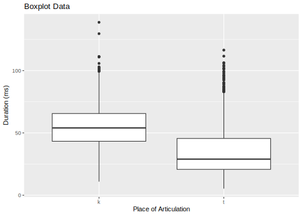
Otherwise you can also use labs() for all labels together:
ggplot(coronal) +
aes(x = Region, fill = Fr) +
geom_bar(position = "fill") +
labs(x = "Region",
y = "Proportion",
title = "Proportional Use of Fricatives",
subtitle = "Separated by Region")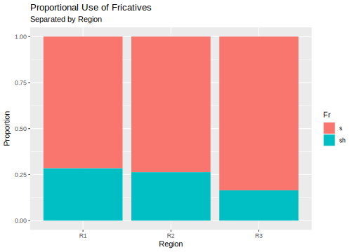
10.2 Limit the Coordinate System
In order to limit or expand the visible area of a plot, you can use the following functions. However, they have various side effects (also see here):
xlim()and/orylim(), respectivelyscale_x_continuous(limits = c())and/orscale_y_continuous(limits = c()): eliminates data points by zooming in and throws a warning about that. These functions may affect regression lines and other superimposed plot components.coord_cartesian(xlim = c(), ylim = c()): hides data points and thus does not throw a warning. This does not influence regression lines and other superimposed plot components.
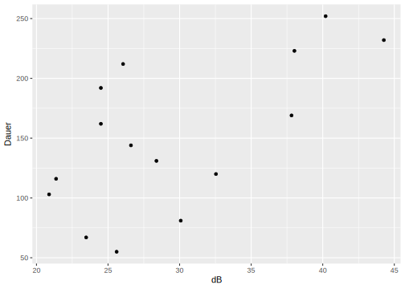
# with coord_cartesian()
ggplot(int) +
aes(x = dB, y = Dauer) +
geom_point() +
coord_cartesian(xlim = c(10,40),
ylim = c(30,280))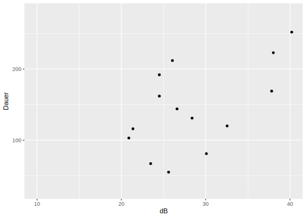
# with xlim() and ylim()
ggplot(int) +
aes(x = dB, y = Dauer) +
geom_point() +
xlim(10, 40) +
ylim(30, 280)## Warning: Removed 2 rows containing missing values or values
## outside the scale range (`geom_point()`).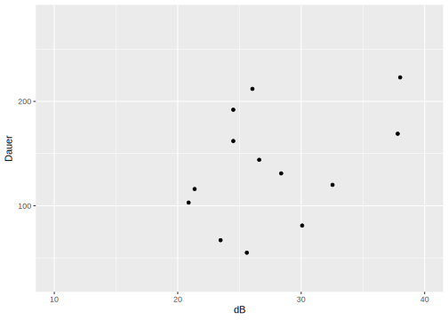
10.3 Colours
ggplot2 always uses the same colour palette by default. But there are many more colours at your disposal as shown in this selection. You can get the first ten of these with:
## [1] "white" "aliceblue" "antiquewhite"
## [4] "antiquewhite1" "antiquewhite2" "antiquewhite3"
## [7] "antiquewhite4" "aquamarine" "aquamarine1"
## [10] "aquamarine2"The variable to be colour-coded in a ggplot is given by col (outline or line colour) or fill (filler colour) in the aesthetic mapping. This is what it looks like to colour-code the variable Kons in a boxplot of durations:
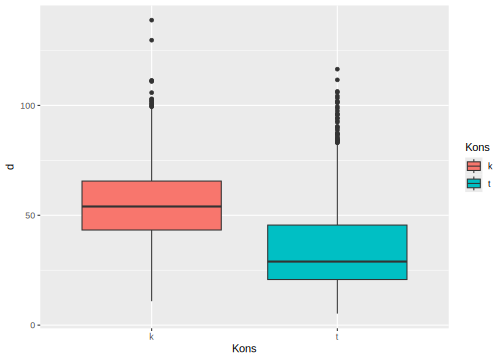
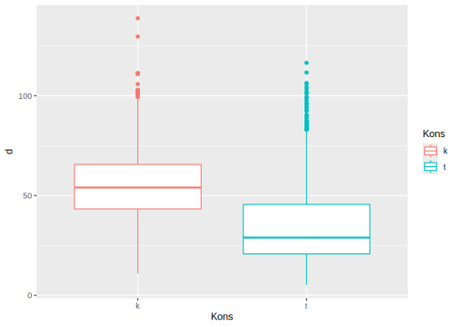
As you can see, a legend for the colours was automatically added to the plot. Now, let’s choose the colours ourselves:
# "fill" with our own colours
colours <- c("darkgoldenrod1", "navy")
ggplot(asp) +
aes(y = d, x = Kons, fill = Kons) +
geom_boxplot(fill = colours)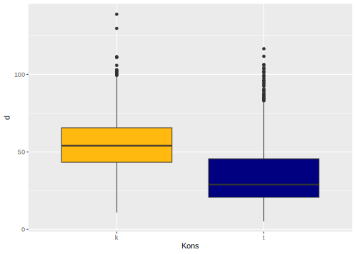
This plot does not have a legend. If we want to have one, we need to use the functions scale_color_manual() or scale_fill_manual(), respectively:
# "fill" with our own colours
colours <- c("darkgoldenrod1", "navy")
ggplot(asp) +
aes(y = d, x = Kons, fill = Kons) +
geom_boxplot() +
scale_fill_manual(values = colours)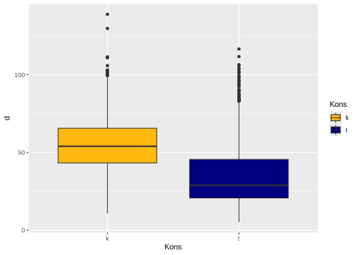
# the same for the bar plot
ggplot(coronal) +
aes(x = Region, fill = Fr) +
geom_bar() +
scale_fill_manual(values = colours)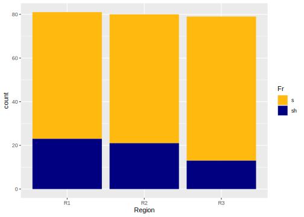
By the way, boxplots offer the possibility of styling the outliers independently of the box:
colours <- c("darkgoldenrod1", "navy")
ggplot(asp) +
aes(y = d, x = Kons, fill = Bet) +
geom_boxplot(outlier.color = "red",
outlier.shape = 4,
outlier.size = 3) +
scale_fill_manual(values = colours)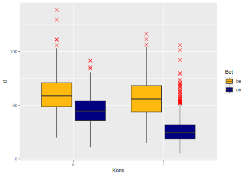
10.4 Further Specifications
Of course there are many more specifications for the distinct types of plots than just the colour, e.g. the size, line type, shape of points, font…
col: outline or line colourfill: filler colourshape: shape of pointssize: size of pointslinewidth: width of lineslty: line typestroke: font stroke
There is a vignette about that:
Let’s use some of these specifications here:
ggplot(int) +
aes(x = dB, y = Dauer) +
geom_point(col = "purple",
size = 3,
shape = 0) +
geom_line(col = "orange",
size = 1.5,
lty = "twodash")## Warning: Using `size` aesthetic for lines was deprecated in
## ggplot2 3.4.0.
## ℹ Please use `linewidth` instead.
## This warning is displayed once every 8 hours.
## Call `lifecycle::last_lifecycle_warnings()` to see
## where this warning was generated.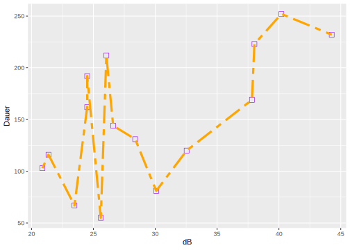
Always consider carefully whether a specification is actually necessary in order to make the plot clearer.
10.5 Font Size
The default font size of the axes and title is 11pt or smaller. Especially in presentations your plots should have font sizes of at least 16-24pt. In order to do that in ggplot, we need to change the theme().
ggplot(asp) +
aes(x = Kons, y = d) +
geom_boxplot() +
xlab("Place of Articulation") +
ylab("Duration (ms)") +
ggtitle("Boxplot Data") +
theme(text = element_text(size = 24), # Axes and title
axis.text = element_text(size = 18)) # Axis labels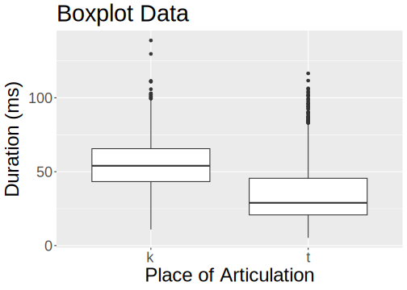
Further Information: theme()
The theme() is responsible for the background colour of the plots, the appearance of the axes and many other things. An overview of the arguments to theme() might give you an impression of all the things you can adapt in your plots.
10.6 Dividing and Arranging Plots
10.6.1 Dividing Plots
ggplot2 offers two ways of dividing a plot: facet_wrap() and facet_grid(). The main argument to these functions is the usually categorical variable(s) whose values shall appear in distinct panels. For instance, we can plot data points associated with different phonemes or speakers in separate panels.
The formulas submitted to facet_wrap() and facet_grid() look like this:
.~Var1or~Var1Var1~.(the dot is obligatory!)Var1~Var2Var1+Var2~Var3Var1~Var2+Var3
It is impractical to use more than three variables in facet_wrap() and facet_grid() because that makes the plot way harder to read and comprehend.
facet_wrap() sorts the panels of a plot into rows and columns.
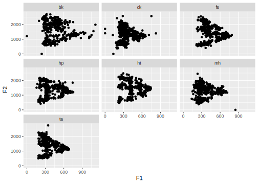
# divide by subject and tenseness
ggplot(vdata) +
aes(x = F1, y = F2) +
geom_point() +
facet_wrap(Subj~Tense)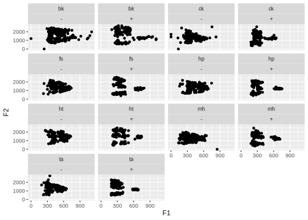
facet_grid(), on the other hand, sorts the panels into either rows or columns. The order for the formula is facet_grid(rows~columns).
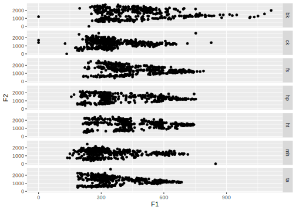
# divide by subject in columns
ggplot(vdata) +
aes(x = F1, y = F2) +
geom_point() +
facet_grid(~Subj)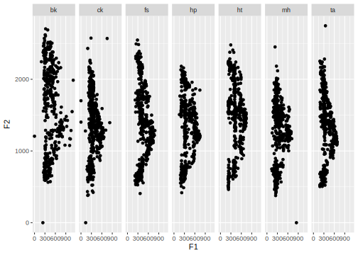
# divide by subject and tenseness
ggplot(vdata) +
aes(x = F1, y = F2) +
geom_point() +
facet_grid(Subj~Tense)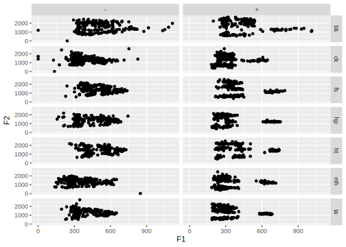
10.6.2 Arrange Plots
Furthermore, you can arrange several plots beside each other or one below the other. For that, we use the function grid.arrange() from the library gridExtra.
plot1 <- ggplot(asp) +
aes(x = Kons, y = d) +
geom_boxplot()
plot2 <- ggplot(coronal) +
aes(x = Region, fill = Fr) +
geom_bar()
plot3 <- ggplot(int) +
aes(x = dB, y = Dauer) +
geom_line() + geom_point()
# in three columns and one row
grid.arrange(plot1, plot2, plot3, ncol = 3, nrow = 1)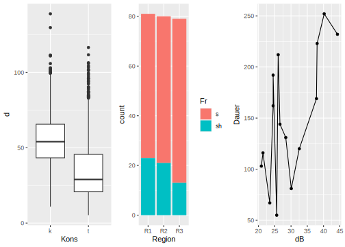
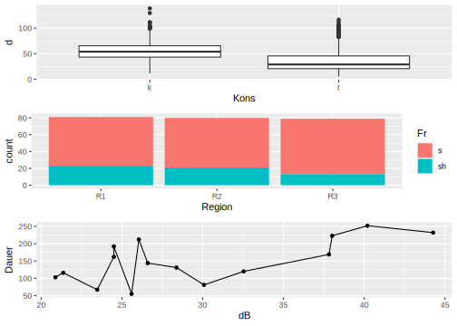